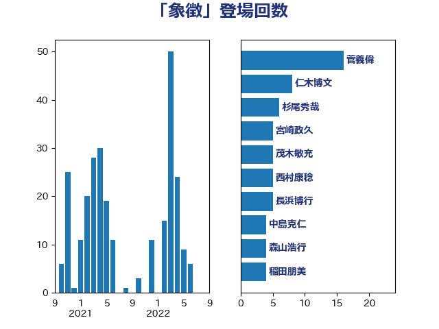

単語「象徴」

| 菅義偉 | 自由民主党 | 16 回 |
| 仁木博文 | 無所属 | 8 回 |
| 杉尾秀哉 | 立憲民主党 | 6 回 |
| 宮崎政久 | 自由民主党 | 5 回 |
| 茂木敏充 | 自由民主党 | 5 回 |
| 西村康稔 | 自由民主党 | 5 回 |
| 長浜博行 | 無所属 | 5 回 |
| 中島克仁 | 立憲民主党 | 4 回 |
| 森山浩行 | 立憲民主党 | 4 回 |
| 稲田朋美 | 自由民主党 | 4 回 |
| 萩生田光一 | 自由民主党 | 4 回 |
| 足立康史 | 日本維新の会 | 4 回 |
| 堀場幸子 | 日本維新の会 | 3 回 |
| 太栄志 | 立憲民主党 | 3 回 |
| 山口那津男 | 公明党 | 3 回 |
| 山崎誠 | 立憲民主党 | 3 回 |
| 篠原豪 | 立憲民主党 | 3 回 |
| 西村智奈美 | 立憲民主党 | 3 回 |
| 赤羽一嘉 | 公明党 | 3 回 |
| 上川陽子 | 自由民主党 | 2 回 |
| 上田清司 | 国民民主党 | 2 回 |
| 中西祐介 | 自由民主党 | 2 回 |
| 勝部賢志 | 立憲民主党 | 2 回 |
| 大島敦 | 立憲民主党 | 2 回 |
| 山添拓 | 日本共産党 | 2 回 |
| 川合孝典 | 国民民主党 | 2 回 |
| 平井卓也 | 自由民主党 | 2 回 |
| 打越さく良 | 立憲民主党 | 2 回 |
| 枝野幸男 | 立憲民主党 | 2 回 |
| 柴田巧 | 日本維新の会 | 2 回 |
| 櫻井周 | 立憲民主党 | 2 回 |
| 江田憲司 | 立憲民主党 | 2 回 |
| 牧山ひろえ | 立憲民主党 | 2 回 |
| 甘利明 | 自由民主党 | 2 回 |
| 田村智子 | 日本共産党 | 2 回 |
| 田村貴昭 | 日本共産党 | 2 回 |
| 矢倉克夫 | 公明党 | 2 回 |
| 石川大我 | 立憲民主党 | 2 回 |
| 福山哲郎 | 立憲民主党 | 2 回 |
| 笠井亮 | 日本共産党 | 2 回 |
| 荒井優 | 立憲民主党 | 2 回 |
| 菊田真紀子 | 立憲民主党 | 2 回 |
| 谷川とむ | 自由民主党 | 2 回 |
| 阿部司 | 日本維新の会 | 2 回 |
| 阿部弘樹 | 日本維新の会 | 2 回 |
| 青柳仁士 | 日本維新の会 | 2 回 |
| 音喜多駿 | 日本維新の会 | 2 回 |
| 三宅伸吾 | 自由民主党 | 1 回 |
| 上田英俊 | 自由民主党 | 1 回 |
| 下条みつ | 立憲民主党 | 1 回 |
| 世耕弘成 | 自由民主党 | 1 回 |
| 中川正春 | 立憲民主党 | 1 回 |
| 中川郁子 | 自由民主党 | 1 回 |
| 井上哲士 | 日本共産党 | 1 回 |
| 伊藤孝恵 | 国民民主党 | 1 回 |
| 伊藤渉 | 公明党 | 1 回 |
| 倉林明子 | 日本共産党 | 1 回 |
| 原口一博 | 立憲民主党 | 1 回 |
| 古川元久 | 国民民主党 | 1 回 |
| 吉川ゆうみ | 自由民主党 | 1 回 |
| 吉川元 | 立憲民主党 | 1 回 |
| 吉川沙織 | 立憲民主党 | 1 回 |
| 大塚耕平 | 国民民主党 | 1 回 |
| 大西健介 | 立憲民主党 | 1 回 |
| 小川淳也 | 立憲民主党 | 1 回 |
| 小池晃 | 日本共産党 | 1 回 |
| 小泉進次郎 | 自由民主党 | 1 回 |
| 小田原潔 | 自由民主党 | 1 回 |
| 山井和則 | 立憲民主党 | 1 回 |
| 山岸一生 | 立憲民主党 | 1 回 |
| 山本太郎 | れいわ新選組 | 1 回 |
| 山田勝彦 | 立憲民主党 | 1 回 |
| 岸真紀子 | 立憲民主党 | 1 回 |
| 後藤祐一 | 立憲民主党 | 1 回 |
| 有村治子 | 自由民主党 | 1 回 |
| 松木けんこう | 立憲民主党 | 1 回 |
| 松野博一 | 自由民主党 | 1 回 |
| 柚木道義 | 立憲民主党 | 1 回 |
| 柿沢未途 | 無所属 | 1 回 |
| 梅村みずほ | 日本維新の会 | 1 回 |
| 森まさこ | 自由民主党 | 1 回 |
| 横山信一 | 公明党 | 1 回 |
| 水岡俊一 | 立憲民主党 | 1 回 |
| 沢田良 | 日本維新の会 | 1 回 |
| 浅田均 | 日本維新の会 | 1 回 |
| 浜田聡 | NHK党 | 1 回 |
| 渡辺周 | 立憲民主党 | 1 回 |
| 牧島かれん | 自由民主党 | 1 回 |
| 猪口邦子 | 自由民主党 | 1 回 |
| 玉木雄一郎 | 国民民主党 | 1 回 |
| 田島麻衣子 | 立憲民主党 | 1 回 |
| 田嶋要 | 立憲民主党 | 1 回 |
| 田村憲久 | 自由民主党 | 1 回 |
| 石井正弘 | 自由民主党 | 1 回 |
| 礒崎哲史 | 国民民主党 | 1 回 |
| 神田潤一 | 自由民主党 | 1 回 |
| 竹内真二 | 公明党 | 1 回 |
| 笠浩史 | 無所属 | 1 回 |
| 緑川貴士 | 立憲民主党 | 1 回 |
| 芳賀道也 | 国民民主党 | 1 回 |
| 若林健太 | 自由民主党 | 1 回 |
| 落合貴之 | 立憲民主党 | 1 回 |
| 藤田文武 | 日本維新の会 | 1 回 |
| 西田昌司 | 自由民主党 | 1 回 |
| 辻元清美 | 立憲民主党 | 1 回 |
| 近藤和也 | 立憲民主党 | 1 回 |
| 里見隆治 | 公明党 | 1 回 |
| 野間健 | 立憲民主党 | 1 回 |
| 金城泰邦 | 公明党 | 1 回 |
| 金村龍那 | 日本維新の会 | 1 回 |
| 鈴木貴子 | 自由民主党 | 1 回 |
| 長妻昭 | 立憲民主党 | 1 回 |
| 階猛 | 立憲民主党 | 1 回 |
| 青山繁晴 | 自由民主党 | 1 回 |
| 青木愛 | 立憲民主党 | 1 回 |
| 青柳陽一郎 | 立憲民主党 | 1 回 |
| 馬場伸幸 | 日本維新の会 | 1 回 |
| 高橋千鶴子 | 日本共産党 | 1 回 |
| 高良鉄美 | 無所属 | 1 回 |